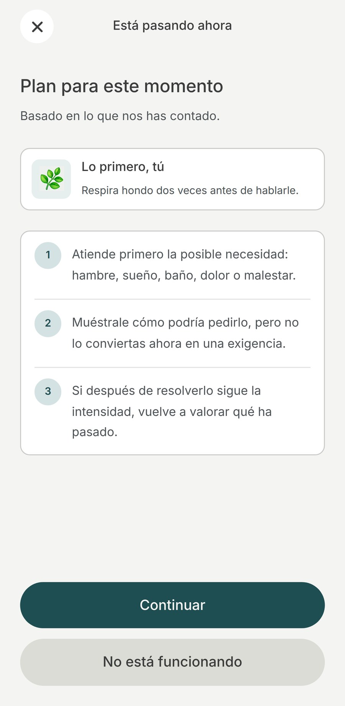
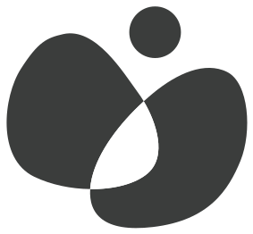
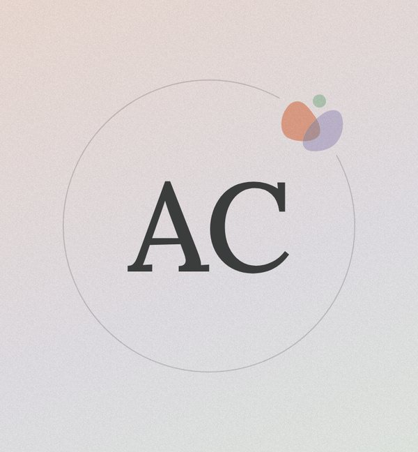
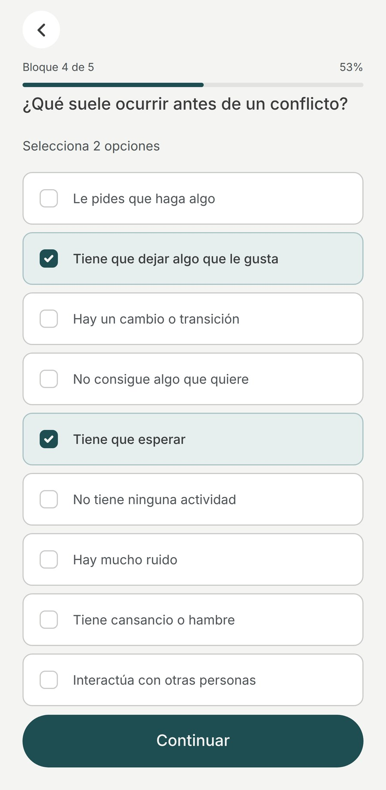
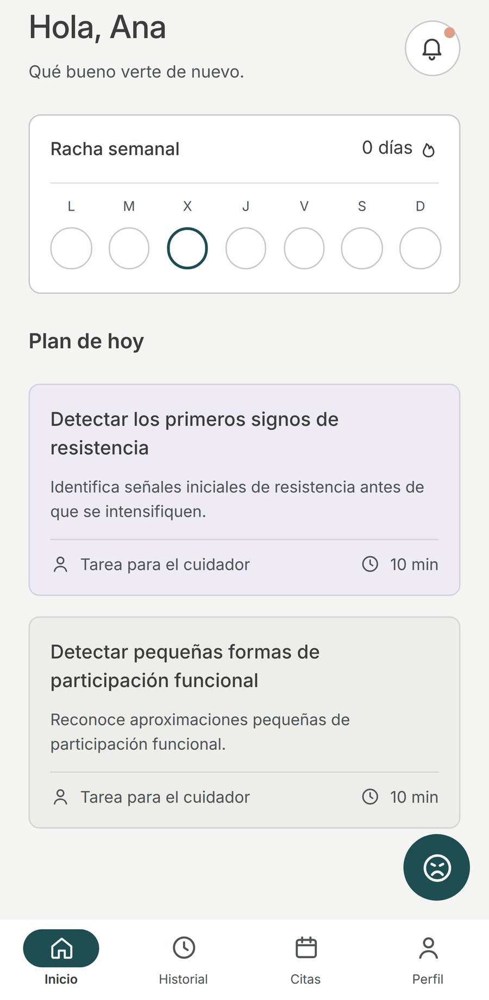
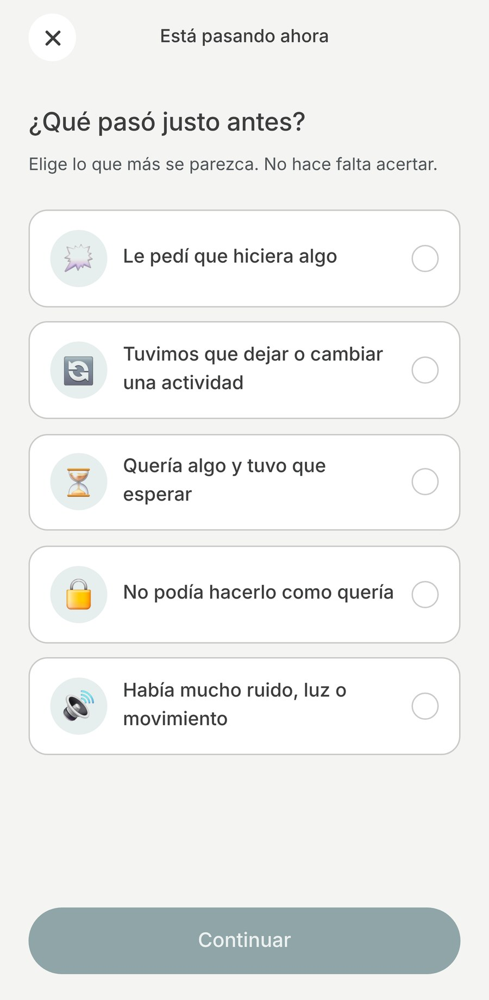

Qué significa que la dirija una psicóloga
Que nada llega a tu pantalla sin pasar por el criterio de una profesional. Y que cuando algo conviene consultarlo en persona, la app te lo dice en vez de intentar resolverlo por su cuenta.
Nítia te acompaña con pasos concretos antes, durante y después del momento difícil. Sin juicios, y sin que haga falta un diagnóstico.

Son las siete de la tarde. El día se ha torcido y no sabes si insistir, cambiar de plan o dejarlo pasar.
Hay mil consejos en internet y ninguno habla de tu hijo. Para ese minuto exacto existe Nítia.

Nítia no es una recopilación de consejos de internet. Lo que la app te propone parte del criterio de una psicóloga colegiada que lleva más de diez años trabajando con familias.

Ana Cerrato Martínez
Psicóloga · dirige los contenidos de Nítia
Que nada llega a tu pantalla sin pasar por el criterio de una profesional. Y que cuando algo conviene consultarlo en persona, la app te lo dice en vez de intentar resolverlo por su cuenta.
Nítia parte de que cada niño funciona como funciona y de que comprenderlo es lo primero. La familia es parte activa del proceso, nunca la culpable de lo que ocurre.
Que esto no sustituye una valoración profesional ni convierte la app en terapia. El diagnóstico y el tratamiento son otra cosa, y se hacen en consulta.
La mayoría de las aplicaciones del sector le hablan al niño. Nítia te habla a ti, que eres quien está delante de la situación.
Dos o tres propuestas al día, no una lista imposible. Con pasos concretos y el nivel de ayuda que cada una necesita. Es lo primero que ves al abrir la app, y lo único que hace falta mirar si el día viene justo.
Un botón para el momento difícil. Ordena lo que está ocurriendo y te guía paso a paso, mientras ocurre.
Cada episodio queda registrado sin que tengas que hacer nada. El plan se ajusta con lo que va aprendiendo de tu hijo.
Si algo conviene consultarlo con un profesional, Nítia te lo dice. Con claridad y sin alarmismo.
Unas preguntas al principio: edad, cómo se comunica, qué situaciones se repiten y qué suele funcionar.
Dos o tres cosas concretas para hoy. Marcas si funcionaron y el plan se ajusta solo.
Si algo se desborda, Nítia ordena la situación contigo y te da el siguiente paso.



Si estás en lista de espera, en proceso de valoración o simplemente sin saber por dónde empezar, Nítia también es para ti.
Preferimos decirlo antes de que la descargues.
Estará disponible en App Store y Google Play en noviembre de 2026. Mientras tanto, puedes seguirnos en Instagram.
Precio de lanzamiento si te suscribes antes del 31 de diciembre de 2026
19,95 €el primer mes
199,95 €el primer año
Después, 24,95 € al mes o 239,95 € al año.
Los primeros 30 días, gratis.
IVA incluido.
No. Nítia funciona igual si estás en lista de espera, en proceso de valoración o sin haber consultado todavía. Lo que necesita saber es cómo es tu hijo, no qué etiqueta tiene.
Nítia se lanza en noviembre de 2026.
24,95 € al mes o 239,95 € al año, IVA incluido, y los primeros 30 días son gratis. Si te suscribes antes del 31 de diciembre de 2026, tu primer mes cuesta 19,95 € o tu primer año 199,95 €; después se aplica el precio general. España es el primer país; después llegará a Latinoamérica.
Esta página no te pide ningún dato. En la app, lo que cuentas sobre tu hijo lo introduces tú, se usa solo para acompañarte y no se vende ni se cede a nadie con fines publicitarios. Se guarda en servidores de la Unión Europea, y puedes descargarlo o borrarlo cuando quieras. Política de privacidad
No, y no pretende hacerlo. Nítia acompaña las horas en las que no hay nadie más, y te avisa cuando algo conviene consultarlo con un profesional. Puedes acudir a quien tú elijas o reservar una cita desde la app; Ana también atiende en consulta privada. Las sesiones se hacen siempre fuera de la app y se pagan aparte.
Nítia la usa la familia del niño: la cuenta la abre su madre, su padre o quien tenga su tutela, porque son quienes deciden sobre su información. Si eres su abuela, su tío, su canguro o su educadora, lo más útil es que lo habléis con ellos y compartáis lo que os funciona: puede ayudaros a ir en la misma dirección.